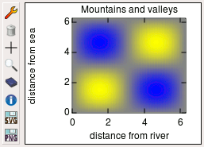

|
NanoQt documentation: home > density plot |
A density plot is a plot of a function of two variables f(x, y) where the two plot axes are the independent variables x and y and the function values are represented by colors. This is the typical plot for a Coulomb diamond for example. NanoQt provides density plot windows that are very similar to the normal 2D plotter. The main differences are:
Please refer to the documentation of the 2D plotter, the density plot window has the same user interface, except for the "Marker & Pen" setting tab being replaced by a "Colors" tab, and two extra setting in the "Others" tab.
This Colors tab holds a gradient editor meant for editing the color gradient that represents the z range of values. Since this editor is shared by the 3D plotter, it has its own help page: see the help on the gradient editor.
The settings in all the tabs can be altered programmatically using the properties of the DensityPlot object associated with the plot window.
From the JavaScript side, the density plot window is represented by a
DensityPlot object returned by the new DensityPlot()
constructor (see below). The data stored in a DensityPlot is called a
map. A map is an array of points, each point being an array of three
numbers.
This is the format you have to use when sending data to a density
plot via the add_map() method. This is also the format of
the data returned by the get_data() method. Both methods
are described below, after the constructor.
Density plots are created using the new DensityPlot()
constructor. It is advisable (but not mandatory) to provide a title to
the constructor. You can also provide data to plot, if it is already
available. If not, an empty plot is created. You will be able to add
data to it later.
// Create a new empty density plot.
var plot = new DensityPlot("Bumps");The syntax of the constructor:
| Constructor | description |
|---|---|
| new DensityPlot(title, map...) |
Creates a new density plot window. The title is optional. If provided, it should be the first
argument. The default title is “unnamed”. The unicity of
the title will enforced by adding a number after the requested title
if necessary. The title can be used to later retrieve a reference to
the plot (see Providing maps in the constructor is optional. If more than one map is provided, they will be merged together into a single map. The constructor returns an opaque DensityPlot objet representing the density plot window. You can then act on the plot using the methods and properties below. |
The object returned by the new DensityPlot() construct
serves as a handle to control the plot. Make sure to store this object
in a variable. If you later delete this variable, the
density plot window will be destroyed. Beware that not storing the
returned density plot object is just like deleting it right away!
new DensityPlot() returns a DensityPlot object that
serves as a handle to the plot. You can act on the plot by calling
methods of this object like:
// Add data using the add_point() method.
var steps = 100;
for (var i = 0; i <= steps; i++) {
var x = i/steps * 2*PI;
for (var j = 0; j <= steps; j++) {
var y = j/steps * 2*PI;
plot.add_point(x, y, sin(x) * sin(y));
}
}The followind methods are available:
| Method | description |
|---|---|
| add_point(x, y, z) | Adds a point at (x, y, z) to the displayed map. |
| add_point_by_idx(i, j, z) | Adds a value z at index (i, j) in matrix mode to the displayed map. |
| add_map(map) | Adds all the points of the given map to the displayed map. |
| get_data() | Returns the data of the displayed map. |
| set_matrixSize(N,P) | Sets the matrix size in matrix mode. |
| get_matrix() | Returns the matrix data in matrix mode of the displayed map. |
| clear() | Removes all the data on the displayed map. |
| save(format, filename) | Saves the plot to a file with the provided file name. The format argument should be either "SVG" or "PNG", either upper- or lower-case. |
| setTool(tool_name) | Selects a tool from the toolbox. The parameter should be a string equal to either "pick", "zoom", "erase" or "info". This method has the same effect as clicking on the corresponding toolbox button. |
The DensityPlot object has also some properties that are special in the sense that they affect the plot’s appearance or behavior. Modifying these properties is another way of acting on the plot. These properties control the same settings as the settings tabs. Example:
// Label the axes.
plot.x_label = "distance from river";
plot.y_label = "distance from sea";All of the following properties can be queried and modified:
| Property | type | description |
|---|---|---|
| title | string | Title of the plot. Uniqueness will be enforced whenever you modify this property. |
| x_label, y_label | string | Axis labels. |
| subsampling | number | The density plot window will only show one point every
subsampling for each curve. Default is 1, i.e. show every single
point. Increase this number to get a faster display and a cleaner
plot. Reset it to one to see everything again. The data sent to the
plotter is not lost: it will be retrieved in full by
get_data() regardless of subsampling. |
| x_min, x_max | number | Range view limits for the x axis. autoscale_x will be
automatically set to false whenever you set any of
these limits. |
| y_min, y_max | number | Range view limits for the y axis. autoscale_y will be
automatically set to false whenever you set any of
these limits. |
| matrixToMap | boolean | Enter the matrix to map mode when set to true, the ranges fixed by the numbers mat_x_min, mat_x_max, mat_y_min, mat_y_max. Default is false |
| mat_x_min, mat_x_max | number | Range limits for the i axis in matrix to map mode. |
| mat_y_min, mat_y_max | number | Range limits for the j axis in matrix to map mode. |
| autoscale_x, autoscale_y | boolean | Whether or not to autoscale the x or y axis. Default is
true. |
| logscale_x, logscale_y | boolean | Whether or not to use a logarithmic scale on the x or y axis.
Default is false. |
| gradient | object | Color gradient used to display the range of z values. See below for the formatting of this object. |
| z_min, z_max | number | Values of z that are mapped to the ends of the color gradient. |
| autoscale_z | boolean | If true, z_min and z_max will be automatically set to the smallest and largest z of the displayed map. |
| grid | boolean | Whether or not to show the grid. Default is
false. |
| polar | boolean | Whether or not to use polar coordinates. Default is
false. |
| max_tics | number | Maximum number of intervals between tics displayed on the axes. The actual number of tics displayed may be less than expected because the tic interval will be rounded up to the next number that is a power of ten times 1, 2 or 5. |
| dx, dy | number | Dimensions of the pixels. If set manually, these should be the spacing of data points in the x and y direction respectively. |
| auto_pixel_size | boolean | If set to true, the density plot will try to guess dx and dy
from the data of the displayed map. Default is
true. |
| immRender | boolean | If set to true, the density plot renderer refresh automatically the displayed map. If false, there is no rendering, the data are only stored. Default is
true. |
The gradient property of a density plot is an object
with the following format:
{
filetype: "NanoQt JSON color gradient",
creator: "NanoQt 0.3.4+svn",
vim_modeline: " vim: set ft=javascript ts=8 noet:",
stops: [ // array of gradient stops
[ // first gradient stop:
0, // position = 0
[0, 1, 4] // color = rgb(0, 1, 4)
],
[0.1, [ 38, 70, 25]], // gradient stop at 0.1
[0.5, [147, 179, 83]], // gradient stop at 0.5
[0.9, [249, 255, 160]], // gradient stop at 0.9
[1 , [255, 255, 255]] // gradient stop at 1
]
}The first three properties of this object (filetype,
creator and vim_modeline) are only meant to
document the data format. They are mostly useful in case you
save() this object into a file. The important bit is the
stops property: it is a list of gradient stops. Each gradient stop is an
array of two elements: a position and a color. The position is a number
between 0 and 1 representing the relative position of this stop along
the gradient. The color is an array of three numbers between 0 and 255
representing the RGB components of the color. The gradient stops should
be sorted by increasing position. The first stop should always be at
position 0 and the last stop at position 1.
If you set the gradient of a density plot programmatically, you do not need to use the complete format above: you can simply set the gradient to an array of stops:
// Set a blue -> yellow gradient
plot.gradient = [
[0, [ 0, 0, 255]], // start at blue
[1, [255, 255, 0]] // end at yellow
];Like Plot, the DensityPlot provides a DensityPlot.find()
static method for recovering a handle on you density plot from it's
name:
// Get the same plot again.
same_plot = DensityPlot.find("Bumps");
// Now we can play with it again.
same_plot.title = "Mountains and valleys";Technically, this is called a static method because it is not
a method of the DensityPlot objects (objects returned by new
DensityPlot()). It is instead a method of the
DensityPlot constructor itself, always referenced as
DensityPlot.find.
| Method | description |
|---|---|
| DensityPlot.find(title) | Returns a DensityPlot object representing the density plot that
has the given title. This object is equivalent to the one originally
returned by new DensityPlot(). If no density plot has
the given title, returns an undefined value. |
There is however a slight difference between the density plot object
returned by DensityPlot.find() and the one originally
returned by new DensityPlot(): deleting the one returned by
DensityPlot.find() will not destroy the plot window.
Density plots can be used as data sinks. To use an existing density
plot as a data sink, add a density_plot property to a
relevant sweep:
// Create a new density plot to hold a Coulomb diamond.
diamond = new DensityPlot("Current map");
// Loop over the gate voltage.
for (var Vg = Vg_min; Vg <= Vg_max; Vg += Vg_step) {
// Do a bias scan.
measure([
{ outputs: { Vg: Vg, Vb: Vb_min } },
{
outputs: { Vb: Vb_max },
// ...the other sweep parameters go here...
density_plot: {
plot: diamond,
axes: ["Vg", "Vds", "I"]
}
}
]);
}For details see the documentation on data sinks.
More examples on using the density plot can be found in the samples directory: density-plot.js and density-plot-sink.js.